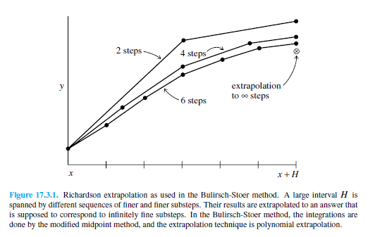
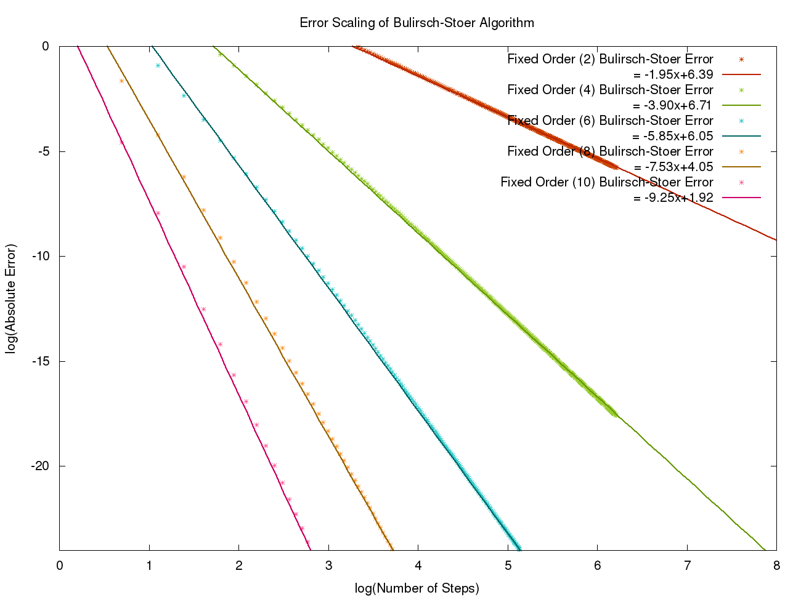

Modified Midpoint Method¶
Although the modified midpoint can be used standalone as an ordinary differential equation integrator, it is regarded as much more powerful when used as a stepper to complement the Bulirsch-Stoer technique.
The modified midpoint method advances a vector of dependent variables \(y(x)\) from a point \(x\), to a point \(x + H\) by a sequence of \(n\) substeps, each of size \(h=H/n\).
The number of right-hand side evaluations required by the modified midpoint method is \(n+1\). The formulas for the method are
The error of this, expressed as a power series in \(h\), the stepsize, contains only even powers of \(h\):
where \(H\) is held constant, but \(h\) changes \(y\) by varing the \(n\) in \(h = H/n\).
The importance of this even power series is that using Richardson Extrapolation to combine steps and knock out higher-order error terms gains us two orders at a time.
The modified midpoint method is a second-order method, but holds an advantage over second order Runge-Kutta, as it only requires one derivative evaluation per step, instead of the two evaluations that Runge-Kutta necessitates.
Bulirsch-Stoer Algorithm¶
The Bulirsch-Stoer algorithm utilizes three core concepts in its design.
First, the usage of Richardson Extrapolation.

Richardson Extrapolation considers the final answer of a numerical calculation as being an analytic function of an adjustable parameter such as the stepsize \(h\). That analytic function can be probed by performing the calculation with various values of \(h\), none of them being necessarily small enough to yield the accuracy that we desire. When we know enough about the function, we fit it to some analytic form and then evaluate it at the point where \(h = 0\).
Secondly, the usage of rational function extrapolation in Richardson-type applications. Rational function fits can remain good approximations to analytic functions even after the various terms in powers of \(h\), all have comparable magnitudes. In other words, \(h\) can be so large as to make the whole notion of the “order” of the method meaningless — and the method can still work superbly.
The third idea is to use an integration method whose error function is strictly even, allowing the rational function or polynomial approximation to be in terms of the variable \(h^2\) instead of just \(h\).
These three ideas give us the Bulirsch-Stoer method, where a single step takes us from \(x\) to \(x + H\), where \(H\) is supposed to be a significantly large distance. That single step consists of many substeps of the modified midpoint method, which is then extrapolated to zero stepsize.
(Excerpts derived from Numerical Recipes: The Art of Scientific Computing, Third Edition (2007), p1256; Cambridge University Press; ISBN-10: 0521880688, http://www.nr.com/)
Error Scaling Behaviour¶
{kind=link}

The graph above shows the error scaling behaviour for the Bulirsch-Stoer method. This was generated using data from XMDS2 for a simple problem whose analytical solution was known. For more information and to generate this plot yourself see the testsuite/integrators/richardson_extrapolation/error_scaling directory. There you will find the .xmds files for generating the data and a python script to generate the plot above (requires gnuplot).